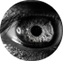
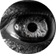

Mausam Bajimaya
Melophilia Illustrator
Education
Nobel Academy
Global School of Science
Islington College
Secondary Education
2013-2020
Nobel Academy
Higher Secondary Schooling
2021-2022
Global School of Science
Bachelor
Running
Islington College
My Skills
Illustrator
Digital Artist
UI/UX Designer
Lead Guitar Player
Digital Artist
UI/UX Designer
Lead Guitar Player
About Me
As a Melophilia designer, i have experience of more then 1 year in
digital arts and further seeking for an opportunity to work in this
field. Making the Digital Portraits of an individual is the main
experties i have.Also as a music enthusiast, i also passionatly
contribute as lead Vocalist and rhythm guitarist in the band 'Mitraz'.
Working with passion
Being a creative music enthusiast explorer, i have been working as
the lead vocalist in our band Matriz. Doing various live music in the
cafes in KTM with my along side band is what i love to do.
Illustrating the different illusions roming in my head is the thing
that makes me creative thinker.
Contact Me
 +977 9842942875
+977 9842942875
 Donzen_20779dx
Donzen_20779dx
 Radhe Radhe, Bhaktapur
Radhe Radhe, Bhaktapur
+977 9842942875
Donzen_20779dx
Radhe Radhe, Bhaktapur